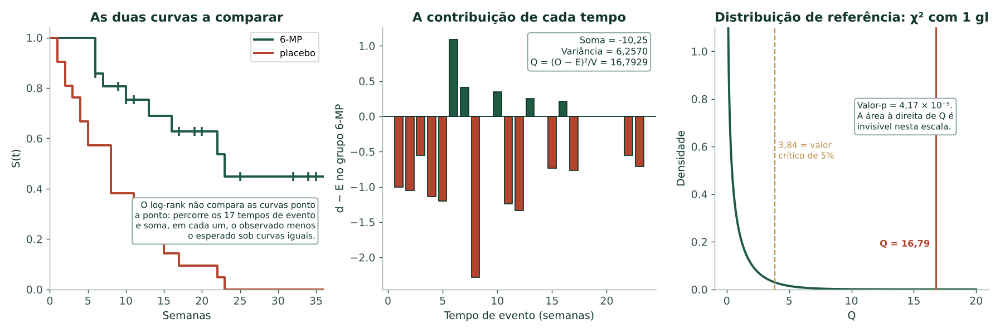
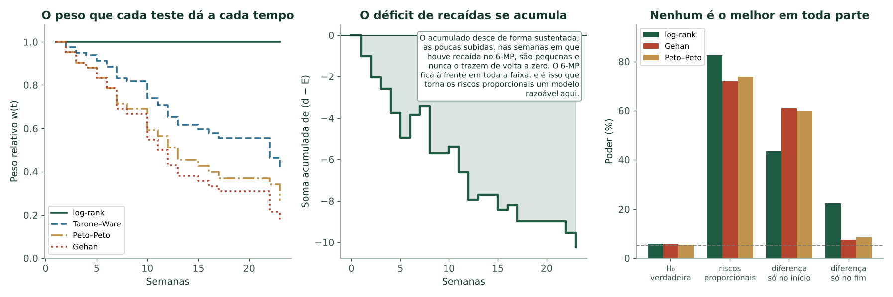

Teste log-rank
Compara curvas de sobrevivência somando, em cada tempo de evento, a diferença entre os eventos observados e os esperados sob a hipótese de curvas iguais.
Comece por aqui
O teste log-rank compara as curvas de sobrevivência de dois ou mais grupos. Ele não compara as curvas ponto a ponto: percorre os tempos em que houve evento e, em cada um, confronta o número de eventos observados em um grupo com o número esperado se as curvas fossem iguais. A soma dessas diferenças, padronizada, é a estatística.
Em cada tempo de evento, se as duas curvas fossem iguais, a proporção de eventos vindos de cada grupo deveria igualar a proporção de pessoas em risco naquele grupo. Nos dados desta ficha, o grupo tratado teve 9 recaídas onde se esperariam 19,25; é esse déficit de 10,25 que a estatística mede.
O que é o teste
A cada tempo de evento \(t_j\), monte a tabela \(2\times2\) que cruza grupo e desfecho entre os que estão em risco. Condicionando nas margens — \(n_j\) em risco, \(d_j\) eventos, \(n_{1j}\) no grupo 1 — o número de eventos do grupo 1 segue uma distribuição hipergeométrica, com esperança e variância conhecidas. A estatística soma os desvios de todas essas tabelas.

A construção — somar tabelas \(2\times2\) estratificadas, cada uma condicionada nas suas margens — é exatamente a do procedimento de Mantel–Haenszel que aparece na ficha do qui-quadrado de independência. A diferença é que ali os estratos eram departamentos e aqui são tempos de evento, construídos pelos próprios dados.
Pressupostos e como verificá-los
| Pressuposto | Por que importa | Como verificar |
|---|---|---|
| Censura não informativa | Igual ao Kaplan–Meier: quem sai deve ter o mesmo risco de quem fica. | Não há teste; examine os motivos de saída. |
| Observações independentes | A variância hipergeométrica pressupõe isso. | Delineamento; para dados agrupados, teste estratificado ou de fragilidade. |
| Grupos definidos antes do acompanhamento | Definir grupos por algo medido depois gera viés imortal. | Protocolo. |
| Riscos proporcionais | Não é exigido para a validade, mas é quando o teste tem poder máximo. | Curvas de log(−log S) aproximadamente paralelas; cox.zph(); curvas que se cruzam são o sinal de alerta. |
| Eventos em número suficiente | O poder depende dos eventos, não de n. | Conte os eventos por grupo, não os pacientes. |
| Censura com padrão semelhante nos grupos | Padrões muito diferentes distorcem a comparação. | Compare as distribuições dos tempos de censura. |
É uma distinção que se perde com frequência. O log-rank continua válido sem riscos proporcionais: sob a hipótese nula de curvas idênticas, ele mantém a taxa de erro de 5%. O que se perde é poder. A simulação desta ficha mostra o log-rank com 82,65% de poder sob riscos proporcionais, 43,35% quando a diferença está só no início, e 22,45% quando está só no fim. Curvas que se cruzam são o caso extremo: as contribuições de sinais opostos se cancelam, e o teste pode não detectar nada — é o que mostra o exemplo da ficha do Wilcoxon–Gehan.
Hipóteses e estatística de teste
Em que:
- \(t_j\)
- \(j\)-ésimo tempo de evento, considerando os dois grupos juntos
- \(n_j,\ d_j\)
- em risco e eventos em \(t_j\), no total
- \(n_{1j},\ d_{1j}\)
- em risco e eventos em \(t_j\) no grupo 1
- \(E_{1j}\)
- eventos esperados no grupo 1 sob \(H_0\)
- \(V_{1j}\)
- variância hipergeométrica de \(d_{1j}\)
- \(O_1,\ E_1\)
- totais observado e esperado no grupo 1
Exemplo numérico, passo a passo
| tⱼ | nⱼ | dⱼ | n₁ⱼ | d₁ⱼ | E₁ⱼ | d₁ⱼ − E₁ⱼ | V₁ⱼ |
|---|---|---|---|---|---|---|---|
| 1 | 42 | 2 | 21 | 0 | 1,0000 | −1,0000 | 0,4878 |
| 2 | 40 | 2 | 21 | 0 | 1,0500 | −1,0500 | 0,4860 |
| 3 | 38 | 1 | 21 | 0 | 0,5526 | −0,5526 | 0,2472 |
| 4 | 37 | 2 | 21 | 0 | 1,1351 | −1,1351 | 0,4772 |
| 5 | 35 | 2 | 21 | 0 | 1,2000 | −1,2000 | 0,4659 |
| 6 | 33 | 3 | 21 | 3 | 1,9091 | +1,0909 | 0,6508 |
| 7 | 29 | 1 | 17 | 1 | 0,5862 | +0,4138 | 0,2426 |
| 8 | 28 | 4 | 16 | 0 | 2,2857 | −2,2857 | 0,8707 |
| 10 | 23 | 1 | 15 | 1 | 0,6522 | +0,3478 | 0,2268 |
| 11 | 21 | 2 | 13 | 0 | 1,2381 | −1,2381 | 0,4481 |
| 12 | 18 | 2 | 12 | 0 | 1,3333 | −1,3333 | 0,4183 |
| 13 | 16 | 1 | 12 | 1 | 0,7500 | +0,2500 | 0,1875 |
| 15 | 15 | 1 | 11 | 0 | 0,7333 | −0,7333 | 0,1956 |
| 16 | 14 | 1 | 11 | 1 | 0,7857 | +0,2143 | 0,1684 |
| 17 | 13 | 1 | 10 | 0 | 0,7692 | −0,7692 | 0,1775 |
| 22 | 9 | 2 | 7 | 1 | 1,5556 | −0,5556 | 0,3025 |
| 23 | 7 | 2 | 6 | 1 | 1,7143 | −0,7143 | 0,2041 |
| Soma | — | 30 | — | 9 | 19,2505 | −10,2505 | 6,2570 |
Em \(t=1\) há 42 pacientes em risco, 21 em cada grupo, e 2 recaídas, ambas no placebo. O esperado no 6-MP é \(E=2\times21/42=1{,}0000\), de modo que a contribuição é \(0-1=-1\).
Em \(t=8\) restam 28 em risco, dos quais 16 no 6-MP, e há 4 recaídas, todas no placebo. O esperado é \(E=4\times16/28=2{,}2857\), e a contribuição, \(-2{,}2857\): é a maior do estudo.
Com 1 grau de liberdade, \(p=4{,}17\times10^{-5}\). O grupo tratado teve 9 recaídas onde se esperariam 19,25.
Razão de riscos
O intervalo de confiança de 95% da estimativa de Peto, obtido de \(\exp\!\left(\ln\widehat{\text{RR}}\pm1{,}96/\sqrt{V}\right)\), é [2,351; 11,266]. A regressão de Cox estima a mesma quantidade por verossimilhança parcial e chega a um valor próximo.
Propriedades
- É o teste de escore da regressão de Cox com uma covariável indicadora de grupo: os dois dão a mesma estatística.
- É a extensão do procedimento de Mantel–Haenszel a tabelas \(2\times2\) estratificadas por tempo de evento.
- Com \(k\) grupos, a estatística tem \(k-1\) graus de liberdade.
- Tem poder assintoticamente ótimo quando os riscos são proporcionais, isto é, quando \(h_2(t)/h_1(t)\) é constante.
- É válido sem riscos proporcionais, mas perde poder; com curvas que se cruzam, pode perder quase todo ele.
- Pertence à família \(G^\rho\) de Harrington–Fleming com \(\rho=0\); \(\rho=1\) dá o teste de Peto–Peto.
- Admite versão estratificada, que soma as estatísticas dentro de cada estrato e é o análogo do ajuste por confundidores.
Como interpretar os resultados
| Elemento | O que informa | Cuidado |
|---|---|---|
| Observed / Expected | Eventos vistos e esperados por grupo. | A razão O/E dá uma primeira ideia do efeito. |
| Chisq | A estatística do teste. | Com k − 1 graus de liberdade. |
| p-value | Evidência contra curvas iguais. | Não mede o tamanho da diferença. |
| (O−E)²/V | A forma correta da estatística. | (O−E)²/E é apenas auxiliar. |
| Razão de riscos | O tamanho do efeito. | Só é interpretável com riscos proporcionais. |
| Curvas de log(−log S) | Diagnóstico de proporcionalidade. | Paralelas: proporcionais. |
Um log-rank significativo diz que as curvas diferem em algum ponto; não diz onde, nem quanto. Apresente sempre a curva de Kaplan–Meier com a tabela de número em risco, as medianas com intervalo, e uma medida de efeito — razão de riscos se os riscos forem proporcionais, diferença de tempo médio restrito se não forem.
Como executar no R e em Python
Onde executar o código em Python
Não é preciso instalar nada: o Google Colab é um computador na nuvem, gratuito, que executa Python pelo navegador e já traz as bibliotecas usadas aqui (numpy, scipy e matplotlib).
A função é survdiff() do pacote survival, com a mesma sintaxe de fórmula de survfit(). A saída traz, por grupo, o número de observados e de esperados, além de (O−E)²/E e (O−E)²/V; a estatística do teste é a soma da última coluna. O argumento rho dá a família de Harrington–Fleming: rho = 0 é o log-rank e rho = 1 é o Peto–Peto. Para estratificar, acrescente + strata(variável) à fórmula. Para o diagnóstico de proporcionalidade, cox.zph() e o gráfico de log(−log S).
library(survival)
survdiff(Surv(tempo, evento) ~ grupo, data = dados) # log-rank
survdiff(Surv(tempo, evento) ~ grupo, data = dados, rho = 1) # Peto-Peto
cox.zph(coxph(Surv(tempo, evento) ~ grupo, data = dados)) # proporcionalidade
Exemplo de aplicação
Contexto dos dados
Os dados são de Freireich et al. (1963): 42 pacientes com leucemia aguda em remissão induzida por esteroides, pareados por estado clínico e divididos entre 6-mercaptopurina e placebo. Registrou-se o tempo, em semanas, até a recaída. No grupo do 6-MP, 12 dos 21 pacientes ainda estavam em remissão quando o estudo terminou: são as observações censuradas. No placebo, todos os 21 recaíram. É o conjunto clássico da área, e acompanha o pacote survival do R. A ficha do Kaplan–Meier estimou as curvas destes mesmos dados; aqui elas são comparadas formalmente, e a ficha do Wilcoxon–Gehan mostra o que acontece quando a escolha do peso passa a importar.
Código em R
# Teste log-rank: exemplo completo ----
# Pacotes: survival (base/recomendado), survminer (gráficos)
library(survival)
tempo <- c(6,6,6,6,7,9,10,10,11,13,16,17,19,20,22,23,25,32,32,34,35,
1,1,2,2,3,4,4,5,5,8,8,8,8,11,11,12,12,15,17,22,23)
evento <- c(0,1,1,1,1,0, 0, 1, 0, 1, 1, 0, 0, 0, 1, 1, 0, 0, 0, 0, 0,
rep(1, 21))
grupo <- factor(rep(c("6-MP", "placebo"), each = 21))
dados <- data.frame(tempo, evento, grupo)
# O teste
survdiff(Surv(tempo, evento) ~ grupo, data = dados)
# N, Observed, Expected, (O-E)^2/E e (O-E)^2/V, com o qui-quadrado e o valor-p
sd <- survdiff(Surv(tempo, evento) ~ grupo, data = dados)
sd$obs; sd$exp # observados e esperados por grupo
sd$chisq
pchisq(sd$chisq, df = 1, lower.tail = FALSE)
# A tabela, tempo a tempo, feita à mão
tev <- sort(unique(dados$tempo[dados$evento == 1]))
tab <- t(sapply(tev, function(x) {
n <- sum(dados$tempo >= x); d <- sum(dados$tempo == x & dados$evento == 1)
n1 <- sum(dados$tempo >= x & dados$grupo == "6-MP")
d1 <- sum(dados$tempo == x & dados$evento == 1 & dados$grupo == "6-MP")
E1 <- d * n1 / n
V1 <- d * (n1/n) * (1 - n1/n) * (n - d) / max(n - 1, 1)
c(t = x, n = n, d = d, n1 = n1, d1 = d1, E1 = E1, dif = d1 - E1, V = V1)
}))
round(tab, 4)
colSums(tab[, c("d", "d1", "E1", "dif", "V")])
sum(tab[, "dif"])^2 / sum(tab[, "V"]) # a estatística Q
# Razão de riscos
sd$obs / sd$exp # O/E por grupo
(sd$obs[2]/sd$exp[2]) / (sd$obs[1]/sd$exp[1]) # razão O/E
# Estimativa de Peto, a partir do próprio log-rank:
OE <- sum(tab[, "dif"]); V <- sum(tab[, "V"])
exp(-OE/V); exp(-OE/V + c(-1, 1) * 1.96 / sqrt(V))
# Comparação com a regressão de Cox (verossimilhança parcial):
summary(coxph(Surv(tempo, evento) ~ grupo, data = dados))
# A família de testes ponderados: rho = 0 é o log-rank, rho = 1 é Peto-Peto
survdiff(Surv(tempo, evento) ~ grupo, data = dados, rho = 0)
survdiff(Surv(tempo, evento) ~ grupo, data = dados, rho = 1)
survdiff(Surv(tempo, evento) ~ grupo, data = dados, rho = 0.5)
# Mais de dois grupos e versão estratificada
# survdiff(Surv(tempo, evento) ~ grupo + strata(centro), data = dados)
# Verificar riscos proporcionais, que é quando o log-rank tem poder máximo
fit <- survfit(Surv(tempo, evento) ~ grupo, data = dados)
plot(fit, fun = "cloglog", col = c("darkgreen", "firebrick"), lwd = 2,
xlab = "Semanas (log)", ylab = "log(-log S(t))")
# Linhas aproximadamente paralelas indicam riscos proporcionais.
cox.zph(coxph(Surv(tempo, evento) ~ grupo, data = dados))
library(survminer)
ggsurvplot(fit, data = dados, pval = TRUE, pval.method = TRUE,
risk.table = TRUE, conf.int = TRUE, xlab = "Semanas")
A mesma análise em Python, com os resultados
Cole o código em um notebook do Google Colab ↗ e execute com Shift+Enter. Os valores abaixo são a saída desse código.
# Bibliotecas: numpy, scipy e matplotlib (todas já no Google Colab)
import numpy as np
from scipy import stats
# ===================================================================
# Os mesmos dados da ficha do Kaplan-Meier: Freireich et al. (1963),
# 42 pacientes com leucemia, 6-mercaptopurina contra placebo.
# ===================================================================
t6 = np.array([6,6,6,6,7,9,10,10,11,13,16,17,19,20,22,23,25,32,32,34,35])
e6 = np.array([0,1,1,1,1,0, 0, 1, 0, 1, 1, 0, 0, 0, 1, 1, 0, 0, 0, 0, 0])
tpl = np.array([1,1,2,2,3,4,4,5,5,8,8,8,8,11,11,12,12,15,17,22,23])
epl = np.ones(21, int)
t = np.r_[t6, tpl]; e = np.r_[e6, epl]
gr = np.r_[np.zeros(21), np.ones(21)].astype(int) # 0 = 6-MP, 1 = placebo
rot = ["6-MP", "placebo"]
def tabela_tempos(t, e, gr):
"""Para cada tempo de evento: n em risco e eventos, no total e por grupo."""
T = np.unique(t[e == 1])
linhas = []
for x in T:
n_ = np.sum(t >= x); d_ = np.sum((t == x) & (e == 1))
n1 = np.sum((t >= x) & (gr == 0)); d1 = np.sum((t == x) & (e == 1) & (gr == 0))
linhas.append((x, n_, d_, n1, d1))
return np.array(linhas, float)
def testes(t, e, gr, rho=0.0):
"""Família G-rho de Harrington-Fleming: rho = 0 é log-rank,
rho = 1 é o Peto-Peto, a versão do Wilcoxon para dados censurados."""
L = tabela_tempos(t, e, gr)
x, n_, d_, n1, d1 = L.T
E1 = d_ * n1 / n_ # esperado no grupo 1
V1 = d_ * (n1/n_) * (1 - n1/n_) * (n_ - d_) / np.maximum(n_ - 1, 1)
# peso: S(t-) elevado a rho, com S o Kaplan-Meier combinado
Sc = np.r_[1.0, np.cumprod(1 - d_/n_)[:-1]]
w = Sc ** rho
O_E = np.sum(w * (d1 - E1)); V = np.sum(w**2 * V1)
Q = O_E**2 / V
return L, E1, V1, w, O_E, V, Q, stats.chi2.sf(Q, 1)
print("Freireich et al. (1963): tempo até a recaída, em semanas")
for j in [0, 1]:
print(f" {rot[j]:<8} n = {np.sum(gr==j)}, eventos = {int(np.sum(e[gr==j]))}, "
f"censuras = {int(np.sum(1-e[gr==j]))}")
# ===================================================================
# PARTE 1 - a tabela do teste log-rank, tempo a tempo
# ===================================================================
L, E1, V1, w, O_E, V, Q, p = testes(t, e, gr, rho=0.0)
x, n_, d_, n1, d1 = L.T
print("\nTabela do log-rank: a cada tempo de evento, compara-se o observado no")
print("grupo 6-MP com o esperado sob a hipótese de curvas iguais.")
print(f"{'tempo':>7}{'n total':>9}{'d total':>9}{'n 6-MP':>9}{'d 6-MP':>9}"
f"{'E(d 6-MP)':>12}{'d - E':>10}{'Var':>10}")
for j in range(len(x)):
print(f"{x[j]:>7.0f}{n_[j]:>9.0f}{d_[j]:>9.0f}{n1[j]:>9.0f}{d1[j]:>9.0f}"
f"{E1[j]:>12.4f}{d1[j]-E1[j]:>10.4f}{V1[j]:>10.4f}")
print(f"{'soma':>7}{'':>9}{d_.sum():>9.0f}{'':>9}{d1.sum():>9.0f}"
f"{E1.sum():>12.4f}{O_E:>10.4f}{V:>10.4f}")
print(f"\nObservado no 6-MP: O1 = {d1.sum():.0f} | Esperado: E1 = {E1.sum():.4f}")
print(f"O - E = {O_E:.4f} | Variância = {V:.4f}")
print(f"Q = (O - E)² / V = {O_E:.4f}² / {V:.4f} = {Q:.4f}")
print(f"gl = 1 | valor-p = {p:.4e}")
print("\nO grupo 6-MP teve 9 recaídas onde se esperariam 19,25 sob a hipótese de")
print("que os dois tratamentos são equivalentes. A diferença é grande demais")
print("para ser atribuída ao acaso.")
# ===================================================================
# PARTE 2 - razão de riscos
# ===================================================================
print("\n" + "=" * 70)
O2 = int(np.sum(e[gr == 1])); E2 = d_.sum() - E1.sum()
print("Razão de riscos (hazard ratio), placebo em relação ao 6-MP")
hr_oe = (O2/E2) / (d1.sum()/E1.sum())
print(f" pela razão O/E: {O2}/{E2:.4f} dividido por "
f"{d1.sum():.0f}/{E1.sum():.4f} = {hr_oe:.4f}")
lhr = -O_E / V # estimativa de Peto, log(HR)
ep_lhr = 1/np.sqrt(V)
print(f" estimativa de Peto: exp({lhr:.4f}) = {np.exp(lhr):.4f}")
print(f" IC 95%: [{np.exp(lhr-1.96*ep_lhr):.4f}; {np.exp(lhr+1.96*ep_lhr):.4f}]")
print(" (a ficha da regressão de Cox estima a mesma quantidade por máxima")
print(" verossimilhança parcial e chega a um valor próximo)")
print(f" Interpretação: a cada instante, quem está no placebo tem cerca de")
print(f" {np.exp(lhr):.1f} vezes o risco instantâneo de recair de quem está no 6-MP.")
# ===================================================================
# PARTE 3 - log-rank, Gehan e Peto-Peto nos mesmos dados
# ===================================================================
print("\n" + "=" * 70)
print("A família de testes ponderados: o peso decide onde o teste 'olha'.")
def gehan(t, e, gr):
"""Wilcoxon-Gehan: peso igual ao número em risco."""
L = tabela_tempos(t, e, gr); x, n_, d_, n1, d1 = L.T
E1 = d_*n1/n_
V1 = d_*(n1/n_)*(1-n1/n_)*(n_-d_)/np.maximum(n_-1, 1)
O_E = np.sum(n_*(d1-E1)); V = np.sum(n_**2*V1)
Q = O_E**2/V
return O_E, V, Q, stats.chi2.sf(Q, 1)
print(f"\n{'teste':<26}{'peso w(t)':<22}{'Q':>10}{'valor-p':>14}")
_, _, _, _, oe0, v0, q0, p0 = testes(t, e, gr, 0.0)
print(f"{'log-rank (Mantel-Cox)':<26}{'1':<22}{q0:>10.4f}{p0:>14.4e}")
_, _, _, _, oe1, v1, q1, p1 = testes(t, e, gr, 1.0)
print(f"{'Peto-Peto (G-rho, rho=1)':<26}{'S(t-)':<22}{q1:>10.4f}{p1:>14.4e}")
oeg, vg, qg, pg = gehan(t, e, gr)
print(f"{'Wilcoxon-Gehan':<26}{'n em risco':<22}{qg:>10.4f}{pg:>14.4e}")
_, _, _, _, oe5, v5, q5, p5 = testes(t, e, gr, 0.5)
print(f"{'G-rho com rho = 0,5':<26}{'raiz de S(t-)':<22}{q5:>10.4f}{p5:>14.4e}")
print("\nAqui os quatro concordam: a diferença entre os tratamentos é grande e")
print("persiste em toda a faixa de tempo, de modo que nenhuma escolha de peso")
print("muda a conclusão. A ficha do Wilcoxon-Gehan mostra o caso em que muda.")
# ===================================================================
# PARTE 4 - o pressuposto de riscos proporcionais
# ===================================================================
print("\n" + "=" * 70)
print("O log-rank tem poder MÁXIMO quando os riscos são proporcionais, e perde")
print("poder quando não são. Simulação com 2.000 experimentos por cenário,")
print("n = 60 por grupo, 20% de censura administrativa.")
def pwexp(rng, n, a, b, c):
"""Tempos de um risco CONSTANTE POR PARTES: a até c, b depois de c."""
E = rng.exponential(1, n) # risco acumulado até o evento
return np.where(E <= a*c, E/a, c + (E - a*c)/b)
def simula(cenario, rep=2000, n=60, semente=3):
rng = np.random.default_rng(semente); cont = np.zeros(3)
for _ in range(rep):
T1 = rng.exponential(10, n) # risco 0,10 sempre
if cenario == "nulo":
T2 = rng.exponential(10, n) # idêntico
elif cenario == "prop":
T2 = rng.exponential(10/1.8, n) # risco 0,18 sempre
elif cenario == "cedo":
T2 = pwexp(rng, n, 0.20, 0.10, 4.0) # 0,20 até t = 4
else:
T2 = pwexp(rng, n, 0.10, 0.20, 8.0) # 0,20 depois de t = 8
C = rng.exponential(40, 2*n)
TT = np.r_[T1, T2]; X = np.minimum(TT, C); E = (TT <= C).astype(int)
G = np.r_[np.zeros(n), np.ones(n)].astype(int)
cont[0] += testes(X, E, G, 0.0)[7] < 0.05
cont[1] += gehan(X, E, G)[3] < 0.05
cont[2] += testes(X, E, G, 1.0)[7] < 0.05
return 100*cont/rep
print(f"\n{'cenário':<46}{'log-rank':>11}{'Gehan':>9}{'Peto-Peto':>12}")
for cen, nome in [("nulo", "H0 verdadeira: risco 0,10 nos dois"),
("prop", "riscos proporcionais: 0,10 contra 0,18"),
("cedo", "risco maior SÓ ATÉ t = 4 (0,20 e depois 0,10)"),
("tardio", "risco maior SÓ APÓS t = 8 (0,10 e depois 0,20)")]:
a, b, c = simula(cen)
print(f"{nome:<46}{a:>10.2f}%{b:>8.2f}%{c:>11.2f}%")
print("\nNa primeira linha os três controlam o nível em 5%, como devem. Na")
print("segunda, com riscos proporcionais, o log-rank tem o maior poder: é para")
print("esse caso que ele foi construído, e nenhum teste ponderado o supera ali.")
print("Nas duas últimas a ordem se inverte de forma nítida. Quando a diferença")
print("está no INÍCIO, Gehan e Peto-Peto chegam a 61% e 60% contra 43% do")
print("log-rank, porque dão mais peso aos tempos em que há mais gente em risco.")
print("Quando a diferença está no FIM, o log-rank fica em 22% e os dois ponderados")
print("caem para 7,5% e 8,4% - quase o nível nominal, ou seja, praticamente cegos")
print("à diferença, porque os seus pesos já decaíram quando ela aparece. Note")
print("ainda que o poder é baixo nos três: detectar uma separação tardia exige")
print("acompanhamento longo. Nenhum dos três é o melhor em toda parte, e por isso a")
print("escolha do teste deve ser declarada ANTES de ver os dados.")
Resultados da execução
Freireich et al. (1963): tempo até a recaída, em semanas
6-MP n = 21, eventos = 9, censuras = 12
placebo n = 21, eventos = 21, censuras = 0
Tabela do log-rank: a cada tempo de evento, compara-se o observado no
grupo 6-MP com o esperado sob a hipótese de curvas iguais.
tempo n total d total n 6-MP d 6-MP E(d 6-MP) d - E Var
1 42 2 21 0 1.0000 -1.0000 0.4878
2 40 2 21 0 1.0500 -1.0500 0.4860
3 38 1 21 0 0.5526 -0.5526 0.2472
4 37 2 21 0 1.1351 -1.1351 0.4772
5 35 2 21 0 1.2000 -1.2000 0.4659
6 33 3 21 3 1.9091 1.0909 0.6508
7 29 1 17 1 0.5862 0.4138 0.2426
8 28 4 16 0 2.2857 -2.2857 0.8707
10 23 1 15 1 0.6522 0.3478 0.2268
11 21 2 13 0 1.2381 -1.2381 0.4481
12 18 2 12 0 1.3333 -1.3333 0.4183
13 16 1 12 1 0.7500 0.2500 0.1875
15 15 1 11 0 0.7333 -0.7333 0.1956
16 14 1 11 1 0.7857 0.2143 0.1684
17 13 1 10 0 0.7692 -0.7692 0.1775
22 9 2 7 1 1.5556 -0.5556 0.3025
23 7 2 6 1 1.7143 -0.7143 0.2041
soma 30 9 19.2505 -10.2505 6.2570
Observado no 6-MP: O1 = 9 | Esperado: E1 = 19.2505
O - E = -10.2505 | Variância = 6.2570
Q = (O - E)² / V = -10.2505² / 6.2570 = 16.7929
gl = 1 | valor-p = 4.1688e-05
O grupo 6-MP teve 9 recaídas onde se esperariam 19,25 sob a hipótese de
que os dois tratamentos são equivalentes. A diferença é grande demais
para ser atribuída ao acaso.
======================================================================
Razão de riscos (hazard ratio), placebo em relação ao 6-MP
pela razão O/E: 21/10.7495 dividido por 9/19.2505 = 4.1786
estimativa de Peto: exp(1.6383) = 5.1462
IC 95%: [2.3506; 11.2663]
(a ficha da regressão de Cox estima a mesma quantidade por máxima
verossimilhança parcial e chega a um valor próximo)
Interpretação: a cada instante, quem está no placebo tem cerca de
5.1 vezes o risco instantâneo de recair de quem está no 6-MP.
======================================================================
A família de testes ponderados: o peso decide onde o teste 'olha'.
teste peso w(t) Q valor-p
log-rank (Mantel-Cox) 1 16.7929 4.1688e-05
Peto-Peto (G-rho, rho=1) S(t-) 14.4572 1.4338e-04
Wilcoxon-Gehan n em risco 13.4579 2.4398e-04
G-rho com rho = 0,5 raiz de S(t-) 15.7064 7.3974e-05
Aqui os quatro concordam: a diferença entre os tratamentos é grande e
persiste em toda a faixa de tempo, de modo que nenhuma escolha de peso
muda a conclusão. A ficha do Wilcoxon-Gehan mostra o caso em que muda.
======================================================================
O log-rank tem poder MÁXIMO quando os riscos são proporcionais, e perde
poder quando não são. Simulação com 2.000 experimentos por cenário,
n = 60 por grupo, 20% de censura administrativa.
cenário log-rank Gehan Peto-Peto
H0 verdadeira: risco 0,10 nos dois 5.75% 5.65% 5.45%
riscos proporcionais: 0,10 contra 0,18 82.65% 71.80% 73.75%
risco maior SÓ ATÉ t = 4 (0,20 e depois 0,10) 43.35% 60.95% 59.70%
risco maior SÓ APÓS t = 8 (0,10 e depois 0,20) 22.45% 7.50% 8.40%
Na primeira linha os três controlam o nível em 5%, como devem. Na
segunda, com riscos proporcionais, o log-rank tem o maior poder: é para
esse caso que ele foi construído, e nenhum teste ponderado o supera ali.
Nas duas últimas a ordem se inverte de forma nítida. Quando a diferença
está no INÍCIO, Gehan e Peto-Peto chegam a 61% e 60% contra 43% do
log-rank, porque dão mais peso aos tempos em que há mais gente em risco.
Quando a diferença está no FIM, o log-rank fica em 22% e os dois ponderados
caem para 7,5% e 8,4% - quase o nível nominal, ou seja, praticamente cegos
à diferença, porque os seus pesos já decaíram quando ela aparece. Note
ainda que o poder é baixo nos três: detectar uma separação tardia exige
acompanhamento longo. Nenhum dos três é o melhor em toda parte, e por isso a
escolha do teste deve ser declarada ANTES de ver os dados.
| Elemento | Valor |
|---|---|
| Eventos: 6-MP / placebo | 9 / 21 |
| Esperados sob H₀: 6-MP / placebo | 19,2505 / 10,7495 |
| O − E no grupo 6-MP | −10,2505 |
| Variância | 6,2570 |
| Q de log-rank | 16,7929; gl = 1; p = 4,17 × 10⁻⁵ |
| Razão de riscos pela razão O/E | 4,179 |
| Razão de riscos de Peto | 5,146; IC 95% [2,351; 11,266] |
| Teste | Peso w(t) | Q | Valor-p |
|---|---|---|---|
| Log-rank (Mantel–Cox) | 1 | 16,7929 | 4,17 × 10⁻⁵ |
| G-ρ com ρ = 0,5 | √S(t−) | 15,7064 | 7,40 × 10⁻⁵ |
| Tarone–Ware | √(n em risco) | 15,1236 | 1,01 × 10⁻⁴ |
| Peto–Peto (G-ρ, ρ = 1) | S(t−) | 14,4572 | 1,43 × 10⁻⁴ |
| Wilcoxon–Gehan | n em risco | 13,4579 | 2,44 × 10⁻⁴ |
| Cenário | Log-rank | Gehan | Peto–Peto |
|---|---|---|---|
| H₀ verdadeira: risco 0,10 nos dois | 5,75% | 5,65% | 5,45% |
| Riscos proporcionais: 0,10 contra 0,18 | 82,65% | 71,80% | 73,75% |
| Risco maior só até t = 4 | 43,35% | 60,95% | 59,70% |
| Risco maior só após t = 8 | 22,45% | 7,50% | 8,40% |
Leitura: o grupo tratado teve 9 recaídas onde se esperariam 19,25 sob a hipótese de equivalência entre os tratamentos. A estatística de 16,79 com 1 grau de liberdade dá \(p=4{,}17\times10^{-5}\): a diferença é grande demais para ser atribuída ao acaso. A razão de riscos de Peto, 5,15 com intervalo [2,35; 11,27], traduz o resultado em uma escala interpretável — a cada instante, um paciente no placebo tem cerca de cinco vezes o risco instantâneo de recair de um paciente tratado.
O gráfico central é o diagnóstico informal de proporcionalidade. A soma acumulada de \((O-E)\) desce de forma sustentada ao longo de todo o acompanhamento: as poucas subidas, nas semanas em que houve recaída no grupo tratado, são pequenas e nunca trazem o acumulado de volta a zero. A vantagem do 6-MP existe em toda a faixa de tempo, e não apenas em um trecho — que é exatamente a situação em que o log-rank é o teste de maior poder.
Sobre a família de testes: os cinco procedimentos diferem apenas pelo peso que atribuem a cada tempo de evento, e aqui todos rejeitam com folga. A ordem das estatísticas — log-rank no topo, Gehan na base — é consistente com uma diferença que persiste: quanto mais peso o teste dá aos tempos tardios, mais evidência ele acumula. Em dados assim, a escolha do peso é irrelevante para a conclusão.
Sobre o poder: a simulação é construída com riscos constantes por partes, de modo que se sabe exatamente onde está a diferença. Na primeira linha os três testes controlam o nível em 5%, como devem. Na segunda, com riscos proporcionais, o log-rank tem o maior poder — é a situação para a qual foi construído, e nenhum teste ponderado o supera ali. Nas duas últimas a ordem se inverte de forma nítida: quando a diferença está só no início, Gehan e Peto–Peto chegam a 61% e 60% contra 43% do log-rank; quando está só no fim, o log-rank fica em 22% e os dois ponderados caem para 7,5% e 8,4%, praticamente cegos. Nenhum é o melhor em toda parte, e por isso a escolha do teste pertence ao protocolo, não à análise.
Erros comuns
| Erro | Como evitar |
|---|---|
| Escolher o teste depois de ver as curvas | Fixe o teste no protocolo. |
| Supor que o log-rank exige riscos proporcionais | Ele é válido sem eles; o que se perde é poder. |
| Aplicar a curvas que se cruzam | As contribuições se cancelam; use um teste ponderado ou o RMST. |
| Reportar só o valor-p | Acrescente curva, medianas e medida de efeito. |
| Interpretar a razão de riscos sem proporcionalidade | Ela não é constante no tempo; prefira a diferença de RMST. |
| Contar pacientes em vez de eventos | O poder depende dos eventos. |
| Definir grupos por algo medido depois do início | Gera viés de tempo imortal. |
| Fazer muitas comparações par a par sem ajuste | Com k grupos, ajuste para multiplicidade. |
| Ignorar estratos relevantes | Use + strata() para centros ou blocos. |
| Usar com riscos competitivos | Nesse caso, o teste de Gray sobre a incidência acumulada. |
Alternativas e fluxo de trabalho
| Procedimento | Quando preferir |
|---|---|
| Wilcoxon–Gehan | Diferença concentrada no início do acompanhamento. |
| Peto–Peto (G-ρ com ρ = 1) | Idem, com peso menos sensível ao padrão de censura. |
| Tarone–Ware | Meio-termo, quando não se sabe onde a diferença estará. |
| G-ρ de Harrington–Fleming | Quando se quer ajustar o peso a uma hipótese prévia explícita. |
| Log-rank estratificado | Há um confundidor categórico a controlar. |
| Regressão de Cox | Há covariáveis contínuas a ajustar. |
| Diferença de tempo médio restrito (RMST) | Riscos não proporcionais; medida de efeito interpretável. |
| Teste de Gray | Riscos competitivos. |
| Testes de máximo combinado | Robustez a vários padrões de afastamento. |
- Fixe o teste e o horizonte no protocolo, antes de ver os dados.
- Estime e apresente as curvas de Kaplan–Meier com a tabela de número em risco.
- Examine a proporcionalidade pelo gráfico de log(−log S) e por
cox.zph(). - Aplique o teste escolhido e relate Q, graus de liberdade e valor-p.
- Acrescente O e E por grupo, que tornam o resultado legível.
- Reporte uma medida de efeito com intervalo.
- Se as curvas se cruzarem, não force a razão de riscos: use o RMST.
- Com mais de dois grupos, planeje as comparações e o ajuste.
Referências desta ficha
- MANTEL, Nathan. Evaluation of survival data and two new rank order statistics arising in its consideration. Cancer Chemotherapy Reports, v. 50, n. 3, p. 163-170, 1966.
- MANTEL, Nathan; HAENSZEL, William. Statistical aspects of the analysis of data from retrospective studies of disease. Journal of the National Cancer Institute, v. 22, n. 4, p. 719-748, 1959.
- COX, D. R. Regression models and life-tables. Journal of the Royal Statistical Society: Series B, v. 34, n. 2, p. 187-220, 1972.
- PETO, Richard; PETO, Julian. Asymptotically efficient rank invariant test procedures. Journal of the Royal Statistical Society: Series A, v. 135, n. 2, p. 185-207, 1972.
- PETO, Richard et al. Design and analysis of randomized clinical trials requiring prolonged observation of each patient. II. Analysis and examples. British Journal of Cancer, v. 35, n. 1, p. 1-39, 1977.
- HARRINGTON, David P.; FLEMING, Thomas R. A class of rank test procedures for censored survival data. Biometrika, v. 69, n. 3, p. 553-566, 1982.
- TARONE, Robert E.; WARE, James. On distribution-free tests for equality of survival distributions. Biometrika, v. 64, n. 1, p. 156-160, 1977.
- SCHOENFELD, David. The asymptotic properties of nonparametric tests for comparing survival distributions. Biometrika, v. 68, n. 1, p. 316-319, 1981.
- ROYSTON, Patrick; PARMAR, Mahesh K. B. Restricted mean survival time: an alternative to the hazard ratio for the design and analysis of randomized trials with a time-to-event outcome. BMC Medical Research Methodology, v. 13, art. 152, 2013.
- GRAY, Robert J. A class of K-sample tests for comparing the cumulative incidence of a competing risk. The Annals of Statistics, v. 16, n. 3, p. 1141-1154, 1988.
- FREIREICH, Emil J. et al. The effect of 6-mercaptopurine on the duration of steroid-induced remissions in acute leukemia: a model for evaluation of other potentially useful therapy. Blood, v. 21, n. 6, p. 699-716, 1963.
- KLEIN, John P.; MOESCHBERGER, Melvin L. Survival analysis: techniques for censored and truncated data. 2. ed. New York: Springer, 2003.
- COLLETT, David. Modelling survival data in medical research. 3. ed. Boca Raton: CRC Press, 2015.
- COLOSIMO, Enrico A.; GIOLO, Suely R. Análise de sobrevivência aplicada. São Paulo: Blucher, 2006.
- R CORE TEAM. R: a language and environment for statistical computing. Vienna: R Foundation for Statistical Computing, 2026. Disponível em: https://www.r-project.org/.
- THERNEAU, Terry M.; GRAMBSCH, Patricia M. Modeling survival data: extending the Cox model. New York: Springer, 2000. (Pacote
survival.) - KASSAMBARA, Alboukadel; KOSINSKI, Marcin; BIECEK, Przemyslaw. survminer: drawing survival curves using ggplot2. R package. Disponível em: https://CRAN.R-project.org/package=survminer.
- POSIT TEAM. RStudio: integrated development environment for R. Boston: Posit Software, PBC. Disponível em: https://posit.co/download/rstudio-desktop/.
- VIRTANEN, Pauli et al. SciPy 1.0: fundamental algorithms for scientific computing in Python. Nature Methods, v. 17, p. 261-272, 2020. DOI: 10.1038/s41592-019-0686-2. (Funções do módulo
scipy.stats.) - HARRIS, Charles R. et al. Array programming with NumPy. Nature, v. 585, p. 357-362, 2020. DOI: 10.1038/s41586-020-2649-2.
- HUNTER, John D. Matplotlib: a 2D graphics environment. Computing in Science & Engineering, v. 9, n. 3, p. 90-95, 2007.
- GOOGLE. Google Colaboratory. Disponível em: https://colab.research.google.com/.
- As figuras desta ficha foram elaboradas pelo autor.

Prof. Dr. Cássius Henrique Xavier Oliveira
Professor · ICTIN/UFLA · Estatística, Confiabilidade e Ciência de Dados.
Conheça minha trajetória e projetos →